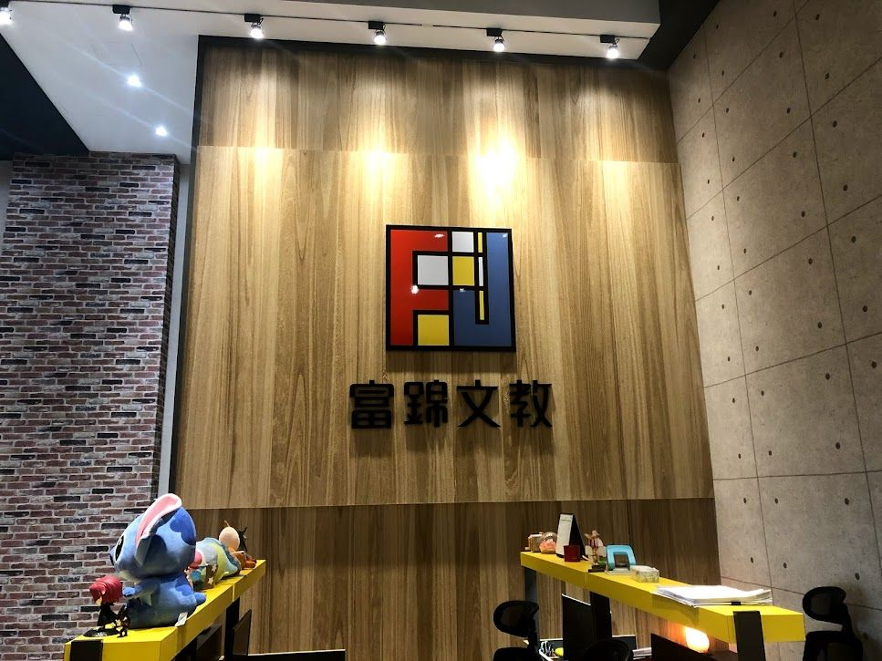
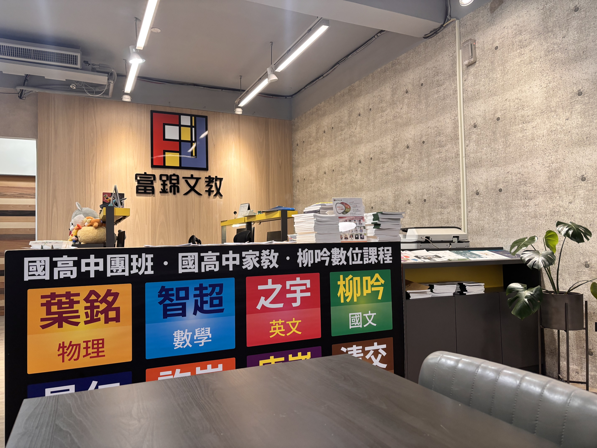
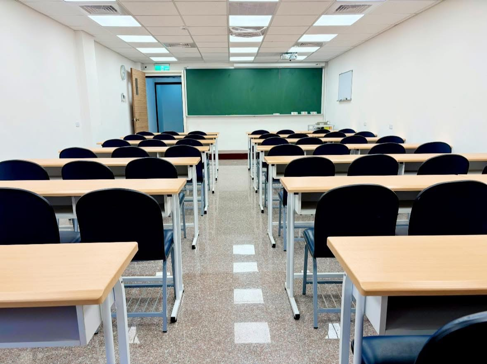
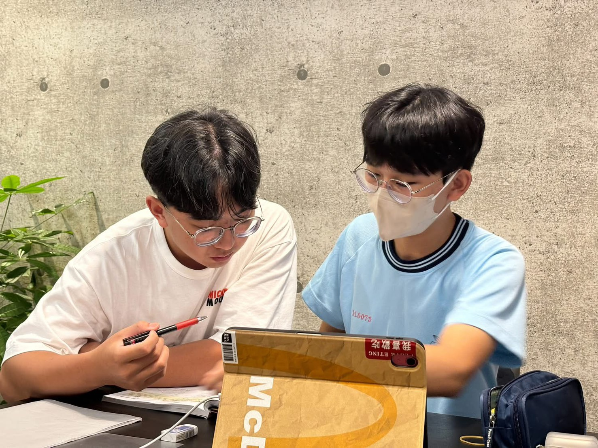

01
頂尖師資
集結台北、新竹、台中優秀師資，在竹東就能享有都會級教學資源，學得扎實，向目標更進一步。
竹東距離新竹市區不遠，也不近。長久以來，許多竹東學子為了追求頂尖的升學資源，每天往返市區，時間與精力成為求學路上看不見的成本。
富錦文教從竹東出發，帶著簡單的初衷：讓優質教育，在孩子身邊發生。2019 年，我們引進台北、新竹、台中的頂尖師資，建立完整的課程體系與升學輔導系統，打造一個與都會區同步的學習環境。
2024 年正式成立國中部，從國中到高中、高中到大學的每一個學習階段，同學都能在同一個地方被好好陪伴。我們重視的，不只是眼前的成績，而是在一次次學習中，能否真正累積能力、建立自信，走出屬於自己的方向。
每個人都有不同的起點，富錦從不用同一把尺衡量所有人。我們相信，只要找到適合自己的方式，每位學子都有機會走出屬於自己的精彩。
在這裡，困惑有人接住，進步有人看見，對未來的想像，也有人陪著一起走得更遠。
富錦看重的，不只是眼前的分數，更在乎於學習的路上否能真正得到成長——建立思考的方式、找到解決問題的能力，以及對自己愈來愈踏實的信心。
國中與高中，是同學探索自我與積累能力的重要階段。看似平凡的每一個學習足跡，都是一顆正在扎根的種子，悄悄為累積未來的底氣，在時機成熟時彼此交會串連。

「生命中的每一個經歷，也許當下看不見意義，但當我們回首望時才會發現，它們悄悄的連成通往未來的方向。」
這幾年，我們陪伴許多人走過懵懂、迷惘，到逐漸看見自己的方向。每個人的成長節奏不同，但都在某一個時刻，找到了屬於自己的信心。
教育的目的，不只是考上理想大學而已，更重要的，是讓同學們帶著知識作為底氣、帶著韌性作為翅膀，在人生每一個轉彎處，都有能力選擇，也有勇氣前行。



竹東的學生，不應該因為地理距離而少了選擇。這是富錦從第一天就堅持的信念，也是我們每一次選擇投入更多的理由。
2022、2023 年暑假，富錦參與至善基金會的偏鄉教育計畫，號召清交學長姐組成課輔團隊，前往尖石國中，陪伴即將升上高中的同學提前銜接新的學習節奏。這段走出去的經歷，讓我們更確信：只要教育資源能夠到位，每一位同學都有能力走得更遠、站得更穩。
富錦紮根竹東，一步一步走到現在，靠的不是規模，而是對每一位同學的認真。未來，我們會帶著同樣的初衷繼續前行——陪同學把基礎走扎實，也陪他們有勇氣，去想像屬於自己更寬廣的未來。
集結台北、新竹、台中優秀師資，在竹東就能享有都會級教學資源，學得扎實，向目標更進一步。
清交學長姐陪你解題釋疑，課後有支持，觀念更扎實，學習路上，多一份力量。
一對一掌握弱點與需求，依程度安排專屬課程，讓每一步努力，都更有方向。
安靜專注的自主學習空間，讓讀書節奏練成日常，把自律慢慢變成實力。
肯定表現，也鼓勵進步，讓每一分努力都被看見，讓成就感成為持續向前的動力。
富錦講究每一個學習細節，全心打造舒適、整潔、安全的空間，讓同學專心、安心、自在地學習。